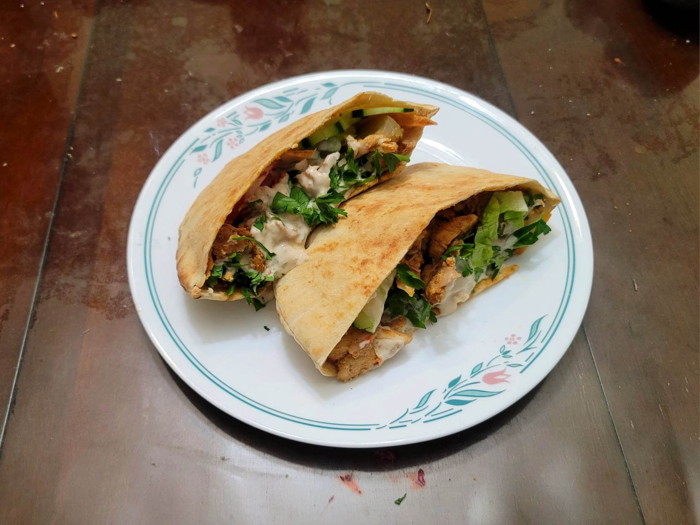

Chicken Shawarma

Ingredients:
Marinade:
- 2 lb Chicken thighs, boneless, skinless
- 1 Onion, quartered
- 5-6 cloves Garlic
- 1/2 large Red bell pepper
- 1 tbsp Mayonnaise
- 1 tbsp Tomato paste
- 1/2 cup (120 g) Yogurt
- 1 tsp Orange zest
- 1 tsp Lemon Zest
- 1/4 cup Orange juice
- 6 tbsp Lemon juice
- 1 tbsp White vinegar
- 1/3 cup Olive oil
- 1/2 tsp Ground cardamom
- 1/2 tsp Cinnamon
- 1/2 tsp Ground cloves
- 1/2 tsp Black pepper
- 1/2 tsp Paprika
- 1/2 tsp Cumin
- Optional: 1/2 tsp Cayenne
- 2 tsp Salt
- 2 Bay leaves
Other Ingredients:
- 4~ Pocket pita loaves, cut in half, or normal Pita
- Iceberg lettuce, chopped
- Red onions, thin sliced
- Cucumbers, halved and thin sliced
- Tomatoes, thin sliced
- Parsley, chopped
- Cucumber pickles, cut into wedges and halved
- Optional: Tabbouleh
- Tahini Sauce
- Optional: French fries
- Optional: Hot sauce
Instructions:
- Add the onion, garlic, and red bell pepper to a food processor and pulse. Then add the mayonnaise, tomato paste, lemon zest, orange zest, and yogurt and pulse again. Add the rest of the ingredients and pulse until combined and as smooth as possible.
- Pound the chicken thighs with a mallet to make even. Add the chicken to the marinade and let marinate overnight.
- Prepare the chicken onto a vertical rotisserie and place half an onion or lemon on the top. Cook on low for about 1 hour or until mostly cooked through. Then set to high and sear the outer edges. Make thin slices from the chicken to use in your shawarma. Then let the outer edges sear again before repeating.
- Warm a loaf of pita in a pan. Then cut the pita in half and open the pocket. Smear some tahini into the pita. Then add the meat followed by the rest of the toppings. Top with some more tahini and parsley and serve immediately.